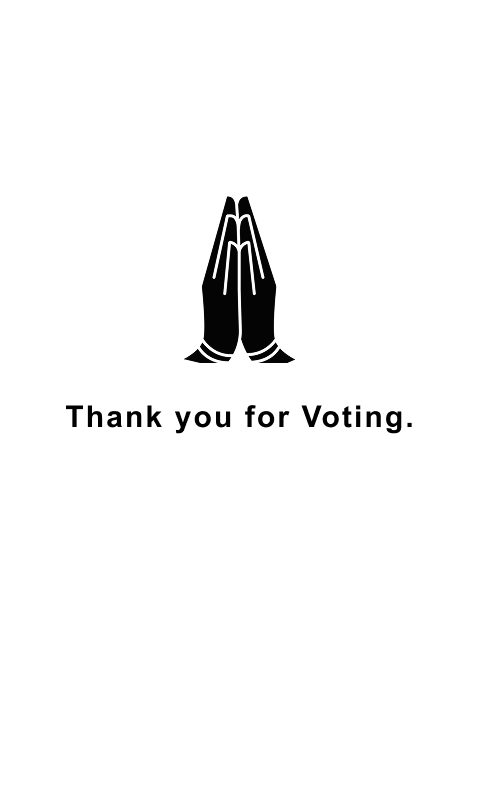

AiO VPS · POC
LP0 · TOP
LP1 · BOTTOM

Is your constituency
'XYZ Constituency' ?
Time Left to accept: 100 seconds

Confirm if the image
match your vote?
Time Left to accept: 100 seconds
Confirm if the print
match your vote?
Time Left to accept: 100 seconds

Time Left to accept: 10 seconds
Your Voting is terminated.
Go Back
to the Polling Booth Officer
Time Left to accept: 10 seconds
SCREEN 480 × 800 · 3:5 PORTRAIT · 1:1 TKINTER LAYOUT
SYSTEM
PRINT
M-T
M-B
ROLL-T
ROLL-B